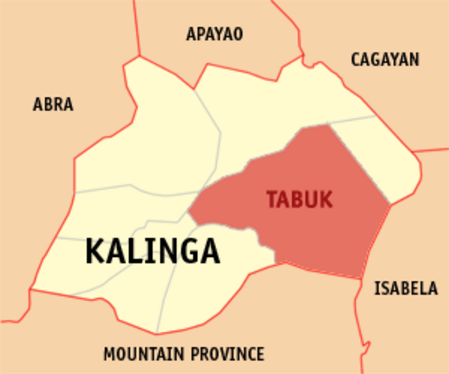
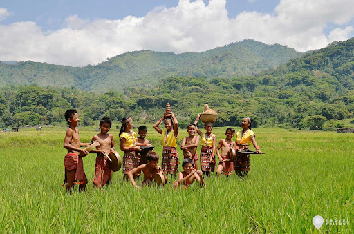

<!DOCTYPE html>
<html>
<meta charset="UTF-8">
<meta http-equiv="X-UA-Compatible" content="IE=edge">
<meta name="viewport" content="width=device-width, initial-scale= 1.0">
<link rel="stylesheet" href="Kalinga.css">
<title>YCordillera</title>  </html>
<header class="header">
  <a href="#" class="logo">YCORDILLERA AK</a>
  <nav class="navbar">
    <a href="Jacob_Website.html">Home</a>
    <a href="Jacob_Websiteabout.html" onclick="return confirm('Info about the website not the creator')" >About </a>
    <a href="Jacob_Websitecontacts.html">Contact</a>
    <button class="button"><a href="WebsiteSignin.html">Sign in</a></button>
    <button class="button"><a href="WebsiteSignup.html">Sign up</a></button>
  </nav>
</header>
<body>
  
  <p class="homedesc1">
    Kalinga covers a total area of 3,231.25 square kilometres (1,247.59 sq mi) occupying the 
    central section of the Cordillera Administrative Region in Luzon. The province is bordered by 
    Mountain Province to the south, Abra to the west, Isabela to the east, Cagayan to the northeast, 
    and Apayao to the north.
  </p>
  <p class="homedesc2">
    The Kalinga people[ (IPA: [kaliŋɡa]) are an indigenous ethnic group whose ancestral domain is in 
    the Cordillera Mountain Range of the northern Philippines.They are mainly found in Kalinga province.
    Kalinga people originally migrated from Kalinga kingdom of ancient India most probably in 3rd c. BCE as most of the 
    culture and customs have resemblance to Kalinga people or present day Odia in Odisha.
  </p>
</body>
<body>
  
  <p class="homedesc3">What do you call  people from Kalinga?
    They call themselves, "tagukami" 'we are men', or "iLutakami", 'we are the people of the earth.' 
    However, nowadays, natives of the area use the name Kalinga (pronounced Ka-ling-ga) - as do government 
    officials and anthropologists - to designate the ethnic group inhabiting Kalingaland.
  </p>
  <p class="homedesc4">
   The culture of Kalinga
   The Kalingas as contrary to the notion of other cultures are peace loving people. They give importance to 
   family solidarity, friendship, integrity and respect. These values in fact are encapsulated in their three c
   ore values, namely; fain, ngilin, and paniyaw which can be heard and observed in their oral tradition.
   The Kalinga people have a rich cultural heritage and are known for their distinct traditions, craftsmanship, and 
   a strong sense of community. The Kalinga tribe is famous for their practice of traditional tattooing, which is 
   considered a symbol of beauty, bravery, and identity.
  </p>
  <p class="homedesc5">
    Kalinga, the province where tribal wars once raged, was once closed to visitors and lacked infrastructure.
     Today, after the “Budong” peace agreements through a council composed of tribal representatives, it allows 
     exploration of the hidden corners of the province.
</body>
<footer>
  jacobivanfranzrandall@gmail.com . All rights Reserved
</footer>